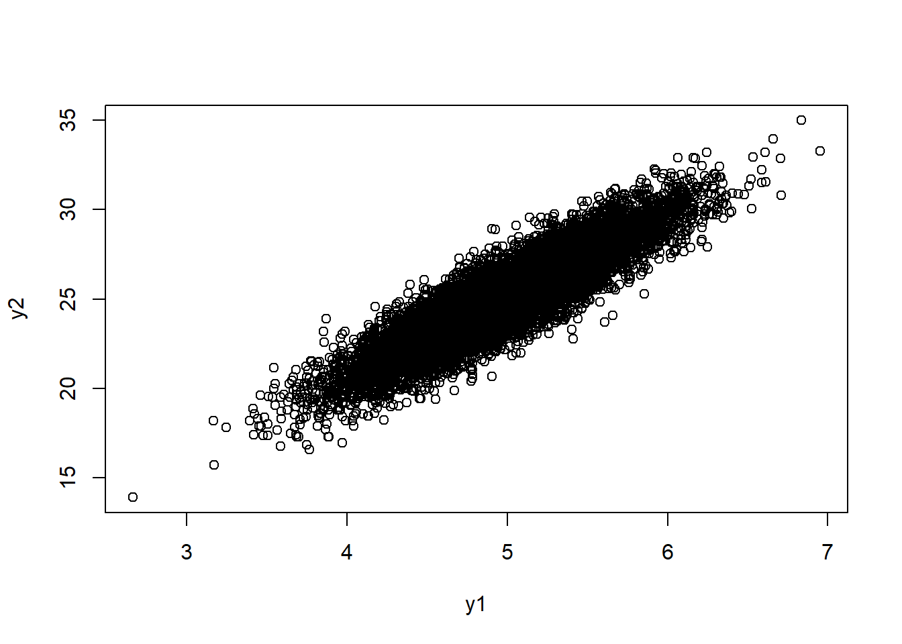
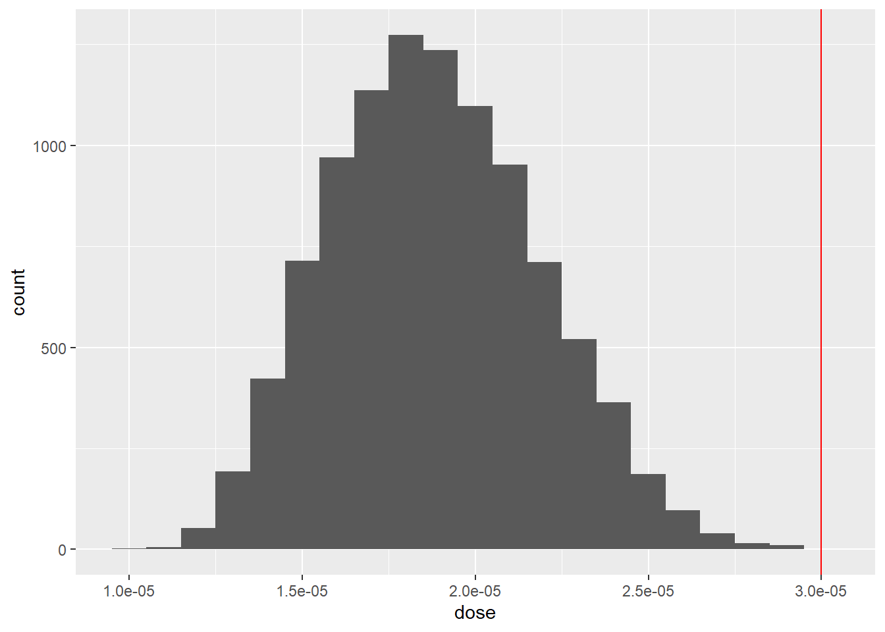

library(dplyr)
Attaching package: 'dplyr'The following objects are masked from 'package:stats':
filter, lagThe following objects are masked from 'package:base':
intersect, setdiff, setequal, unionlibrary(ggplot2)MVEN10 Risk Assessment in Environment and Public Health
We encourage collaboration
Reporting is individual
Att göra osäkerhetsanalys med en kvantitativ modell som beskriver något över tid. Känna på att göra en känslighetsanalys
60 minutes
Write a report using a qmd document and upload it on the assignment in canvas. Instructions at the end of this page.
Detta är en övning om hur flundror ackumulerar det PCB som finns i havsvattnet där de bor. Modellen som används är någorlunda invecklad, men bör ändå inte vara svår att skriva in i R.
Övningen innehåller några olika moment. Ni ska göra känslighetsanalys av er modell; ni ska anta att några av de ingående variablerna är korrelerade (vilket kan påverka känslighetsanalysen); och slutligen ska ni studera hur ackumulationen förändras över tiden, genom att lägga in en tidsserie i modellen.
Ekvationen som modellen bygger på är:
\[ V_t = V_0 e^{-(K+G) \cdot t} \, \frac{U\cdot C,\alpha \cdot C_j \cdot W_j}{K\,+\,G}\left( 1 - e^{-(K+G) \cdot t}\right)\] och vad de olika variablerna betyder kan ni se i tabellen här.
| Parameter | Description | Distribution |
|---|---|---|
| \(V_0\) | Belastning av PCB vid tiden 0 (\(\mu\) g PCB’s / g) | N(10, 2) |
| \(K\) | Utsöndringshastighet av PCB (1/d) | U(0.045, 0.095) |
| \(G\) | Tillväxtkoefficient (g/g/d) | U(0.012, 0.014) |
| \(U\) | Upptagskoefficient over gälarna (L/g/d) | N(0.005, 0.0002) |
| \(C\) | Koncentration av PCB i vattnet (\(\mu\)g / L) | N(4,1) |
| \(\alpha\) | Assimilation av PCB (dimensionslös) | T(0.05, 0.18, 0.5) |
| \(C_j\) | Konsumtionshastighet av bytestyp j (g/g/d) | logN(2.4, 0.5) |
| \(W_j\) | Belastning av PCB hos byten av typ j (\(\mu\)g PCB / g) | logN(1.95, 0.3) |
| \(t\) | tid i dagar | 1 |
| \(V_t\) | Belastning av PCB vid tiden t (\(\mu\)g PCBs /g) |
Fundera gärna lite grann, men bara lagom mycket, på vad ekvationen egentligen säger.
Ekvationen gäller för en viss åldersklass när dessa fiskar äter bytesarterna \(j\). Vi bryr oss bara om en åldersklass (oklart vilken), men däremot så antar vi att de äter flera olika byten, vilket beskrivs av fördelningarna för \(C_j\) och \(W_j\).
Ekvationen räknar ut ackumulationen efter den tid man stoppar in i \(t\). Till att börja med låter vi detta vara 1 dag, dvs \(t = 1\).
\[C_B = \frac{k_1 * (m_0 * \Phi * C_{WTO} + m_P * C_{WDP}) + k_D \sum_{i=1}^n (P_i * C_{Di})}{(k_2 + k_E + k_G + k_M)}\]
Load useful packages
library(dplyr)
Attaching package: 'dplyr'The following objects are masked from 'package:stats':
filter, lagThe following objects are masked from 'package:base':
intersect, setdiff, setequal, unionlibrary(ggplot2)Draw niter random numbers from the input distributions
niter = 10^4
df <- data.frame(
C = rnorm(niter,0.00063,0.000063),
IR = rnorm(niter,5,0.5),
EF = runif(niter,min=0.12,max=0.18),
bw = rnorm(niter,25.11,2.51)) %>%
mutate(dose = C*IR*EF/bw) Calculate the probability that the dose exceeds \(3 \cdot 10^-5\)
threshold = 0.00003
mean(df$dose > threshold)[1] 0.0084Calculate the 95th percentile for the dose
quantile(df$dose, probs = 0.95) 95%
2.622374e-05 Visualise the distribution of dose in a histogram
df %>%
ggplot(aes(x = dose)) +
geom_histogram(binwidth = 0.000001) +
geom_vline(xintercept=threshold,col='red')
return( list( input = “N x 8 matris”, output =“N slumptal av Vt”) )
mat = cbind(output,input)
Alla parvisa korrelationer är
cor(mat)
Vi är bara intresserade av korrelation mellan ingående och den utgående variabeln. Därför kan vi välja att titta på den första kolumnen
cor(mat)[,1]
Varför är det första talet 1?
Bäst är att göra en rank-korrelation, som inte antar ett linjärt samband mellan variablerna. Ett exempel på en sådan här korrelationsanalys kan då se ut så här:
cor(mat, method=“spearman”)[-1,1]
Man kan tänka sig att bytesdjur med högt PCB-innehåll är lätta för flundrorna att fånga, och att det därför blir en korrelation mellan \(C_j\) och \(W_j\). Skapa en ganska kraftig korrelation mellan dessa parametrar. Använd funktionen “cornode” i mc2d-paketet i R.
Hur påverkar korrelationen risken att de ackumulerar mer än 7.5 g?
Hur påverkar korrelationen modellens känslighet för olika variabler?
Man kan också tänka sig, att flundror med mycket PCB i sig från början, blir slöa och därmed har en lägre konsumtionshastighet. Hur blir det då?
Ta bort korrelationerna och utgå ifrån grundvärdena på parametrarna. Ändra fördelningen för \(C_j\) till en likformig inom intervallet 0 till 25. Det är ungefär samma intervall som normalfördelningen skulle ha. Kör om simuleringen.
Hur känslig verkar modellen för förändring i denna parameters fördelning?
Hittills har vi bara studerat hur ackumulationen ser ut efter en dags exponering för giftet. Ändra tiden till 15 dagar, dvs. två veckor senare. Hur mycket har medelvärdet för ackumulationen ändrats? Har känsligheten för någon av parametrarna ändrats? Varför då, då? (Använd alla grundvärden för parametrarna och ingen korrelation).
Kör modellen för olika tidpunkter, säg var 14:e dag i ett helt år.
Vad är sannolikheten att de har ackumulerat mer än 7.5 g efter 1 dag, 15 dagar, 29 dagar etc upp till ett år? Plotta den beräknande sannolikheten mot tid.
Vad är sannolikheten att de ackumulerat mer än 0.75 g efter samma tid? Plotta sannolikheten mot tid i samma bild som föregående.
Vad beror det på att bioackumulationen inte bara fortsätter att öka, ju längre tiden går?
Hur ändras känsligheten för de olika variablerna ju längre tid man tittar på? Kan ni förklara det?
Add dependency between intake rate and body weight using the formula presented in Box 10.4 of the book where you assume a correlation of \(r = 0.9\)

For solution in Excel - study sheet 2 of the previously downloaded file
niter = 10^4
r = 0.9
x1 = rnorm(niter)
x2 = rnorm(niter)
y1 = 5 + 0.5*x1
y2 = 25.11 + 2.51*(r*x1 + x2*sqrt(1-r^2))
plot(y1,y2)
df2 <- data.frame(
C = rnorm(niter,0.00063,0.000063),
x1 = rnorm(niter),
x2 = rnorm(niter),
EF = runif(niter,min=0.12,max=0.18)) %>%
mutate(IR = 5 + 0.5*x1) %>%
mutate(bw = 25.11 + 2.51*(r*x1 + x2*sqrt(1-r^2))) %>%
mutate(dose = C*IR*EF/bw)df2 %>%
ggplot(aes(x = dose)) +
geom_histogram(binwidth=0.000001) +
geom_vline(xintercept=threshold,col='red')
mean(df2$dose > threshold)[1] 0quantile(df2$dose, probs = 0.95) 95%
2.403976e-05